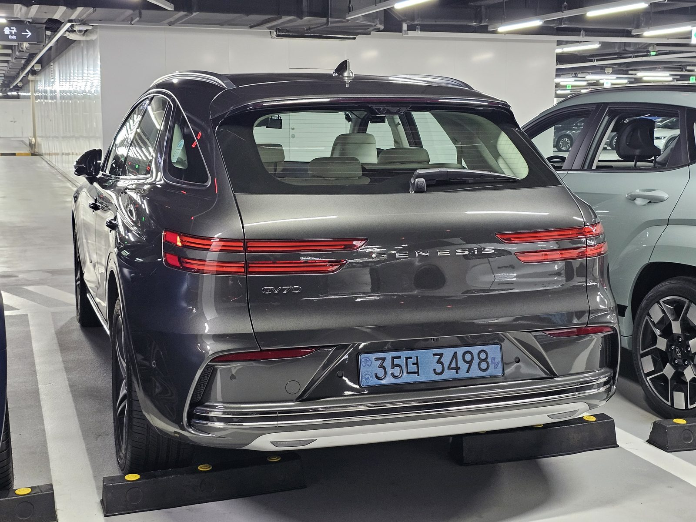

▲ GV70에 어두운 계열 트림이 하나 더 붙을 수 있다는 관측이 나왔다 ⓒ 제네시스
먼저 분명히 해두겠습니다.
제네시스가 GV70 블랙 에디션을 발표한 적은 없습니다.
이 글은 이미 확정된 것과 관측 단계인 것을 갈라놓고 읽어야 하는 내용입니다.
1. 확정된 것 — 2027 GV70 프레스티지 그래파이트
이쪽은 이미 발표된 내용입니다. 북미 시장용 2027 GV70에 프레스티지 그래파이트 트림이 들어갑니다.
| 부위 | 사양 |
|---|---|
| 휠 | 21인치 다크 메탈릭 알로이 |
| 브레이크 캘리퍼 | 레드 |
| 미러 커버 | 블랙 |
| 트림 | 다크 크롬 |
| 실내 | 카본 파이버 가니시 |
레드 캘리퍼가 성격을 규정합니다. 전체를 어둡게 깔아놓고 한 곳만 붉게 남기는 방식은 스포츠 지향 트림의 전형적인 문법입니다.
2. 프레스티지 블랙은 이미 있다
제네시스는 이미 '블랙'이라는 이름의 트림을 운영하고 있습니다.
| 모델 | 구분 |
|---|---|
| G80 | 세단 |
| G90 | 플래그십 세단 |
| GV80 | SUV |
| GV80 쿠페 | 쿠페형 SUV |
구성은 검은색 외장 디테일, 블랙 알로이 휠, 어두운 분위기의 실내입니다.
목록을 보면 빠진 이름이 보입니다. GV70입니다. 이번 관측이 나온 배경이기도 합니다.

▲ GV80에는 이미 프레스티지 블랙이 운영되고 있다 ⓒ Wikimedia Commons
3. 블랙과 그래파이트, 둘 다 나올 수 있나
겹치는 것처럼 보이지만 방향이 다릅니다.
| 구분 | 프레스티지 블랙 | 프레스티지 그래파이트 |
|---|---|---|
| 지향 | 모노톤 완성도 | 스포티 |
| 포인트 컬러 | 없음 — 통일감 | 레드 캘리퍼 |
| 휠 | 블랙 알로이 | 21인치 다크 메탈릭 |
| 상태 | GV70 적용은 관측 | 2027 GV70 확정 |
블랙은 '조용한 고급', 그래파이트는 '드러내는 성능'에 가깝습니다. 같은 어두운 계열이지만 사는 사람이 다릅니다. 두 트림이 공존할 수 있다는 전망이 나오는 이유입니다.

▲ GV70은 제네시스 SUV 라인업의 판매 중심축이다 ⓒ 제네시스
4. 왜 하필 GV70인가
판매량 때문입니다.
GV70은 제네시스 라인업에서 가장 넓은 수요층을 가진 SUV입니다. 특별 트림은 판매가 많은 모델에 붙일 때 효과가 큽니다. 물량이 적으면 개발비를 회수하기 어렵기 때문입니다.
📍 특별 트림의 경제학
블랙 에디션류는 새로운 부품을 개발하는 것이 아니라 기존 부품의 마감과 색을 바꾸는 방식입니다. 개발 부담이 작은 대신 수익성은 좋습니다. 완성차 업체가 이런 트림을 반복해서 내놓는 이유입니다.

▲ 어두운 계열 트림은 실내 분위기까지 함께 바꾼다 ⓒ 제네시스
5. 아직 모르는 것
✅ 확인되지 않은 항목
· 가격 — 공개된 바 없습니다
· 물량 — 한정인지 상시 운영인지 미확인
· 출시 시기 — 일정 발표 없음
· 국내 도입 — 이번 관측은 북미 시장 기준입니다
· 공식 발표 여부 — 제네시스는 아직 공식화하지 않았습니다
네 번째 항목을 특히 유의해야 합니다. 프레스티지 블랙과 그래파이트는 모두 북미 시장 전략으로 운영되는 트림입니다. 국내 도입은 별개의 결정입니다.
국내 트림 구성은 제네시스 공식 사이트에서 확인할 수 있습니다. 제네시스 GV70 페이지 바로가기
6. 정리
제네시스가 북미용 GV70 블랙 에디션을 준비 중이라는 관측이 나왔습니다. 다만 공식 발표는 없습니다.
확정된 것은 2027 GV70 프레스티지 그래파이트입니다. 21인치 다크 메탈릭 휠, 레드 브레이크 캘리퍼, 블랙 미러 커버, 다크 크롬, 카본 인테리어로 구성됩니다.
블랙이 실제로 나오면 두 트림이 공존하는 구조가 됩니다. 블랙은 모노톤 완성도, 그래파이트는 스포티를 맡는 방식입니다. 다만 가격·물량·시기는 모두 미확인이며 국내 도입 여부도 별개입니다.